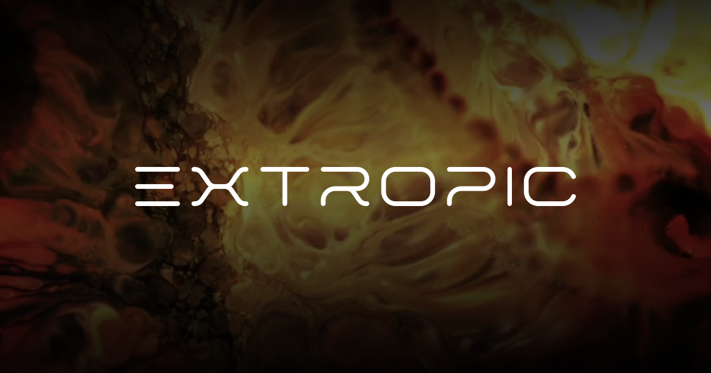

|

|
Extropic AI |
Développement de matériel IA de nouvelle génération, économe en énergie. |
« Informatique basée sur la physique » utilisant la thermodynamique pour alimenter les calculs d'IA générative, prétendant être des ordres de grandeur plus rapides et plus efficaces que les puces actuelles (CPU/GPU). |
- Guillaume Verdon (PDG)
- Trevor McCourt (CTO)
|
2022 |
|
|
Isomorphic Labs |
Réinventer le processus de découverte de médicaments avec une approche « IA d'abord » pour trouver des traitements contre des maladies dévastatrices. |
Utilise la technologie AlphaFold de Google DeepMind, qui prédit avec précision la structure 3D des protéines pour accélérer la conception de nouveaux médicaments. |
- Demis Hassabis (Fondateur & PDG)
|
2021 |
|
|
Morphoceuticals |
Pionnier de la médecine régénérative en utilisant des « électroceutiques » guidés par l'IA pour réparer les tissus et régénérer les organes. |
Cartographier le « bioélectrome » — les réseaux de signalisation électrique du corps — pour déclencher les capacités naturelles du corps en matière de réparation tissulaire et de régénération des membres. |
- Michael Levin (Co‑fondateur)
- David Kaplan (Co‑fondateur)
- Jim Jenson (PDG)
|
(Année de fondation exacte non communiquée, mais les recherches ont gagné en importance en 2022) |